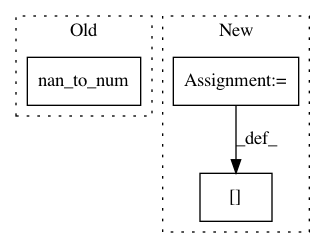

35000f76437852e63287719d948723c322e2327e,basenji/batcher.py,Batcher,next,#Batcher#,26
Before Change
// copy data
Xb = np.array(self.Xf[self.start:stop], dtype="float32")
if self.Yf is not None:
Yb = np.nan_to_num(np.array(self.Yf[self.start:stop], dtype="float32"))
// specify full batch
Nb = self.batch_size
After Change
// fix N positions
Xbi_n = (Xb[i].sum(axis=1) == 0)
Xb[i] = Xb[i] + (1/self.seq_depth)*Xbi_n.repeat(self.seq_depth).reshape(self.seq_len,self.seq_depth)
if self.Yf is not None:
Yb[i] = np.nan_to_num(self.Yf[si])
In pattern: SUPERPATTERN
Frequency: 3
Non-data size: 3
Instances
Project Name: calico/basenji
Commit Name: 35000f76437852e63287719d948723c322e2327e
Time: 2016-07-13
Author: davidkelley44@gmail.com
File Name: basenji/batcher.py
Class Name: Batcher
Method Name: next
Project Name: rtavenar/tslearn
Commit Name: 5c6098fc58a41f06acc90d675ec036468b777d6a
Time: 2020-06-11
Author: romain.tavenard@univ-rennes2.fr
File Name: tslearn/early_classification.py
Class Name: NonMyopicEarlyClassifier
Method Name: fit
Project Name: dirty-cat/dirty_cat
Commit Name: 6d27fa90fd962caf3d61c8e20550694818491096
Time: 2018-11-16
Author: gael.varoquaux@normalesup.org
File Name: dirty_cat/similarity_encoder.py
Class Name:
Method Name: ngram_similarity